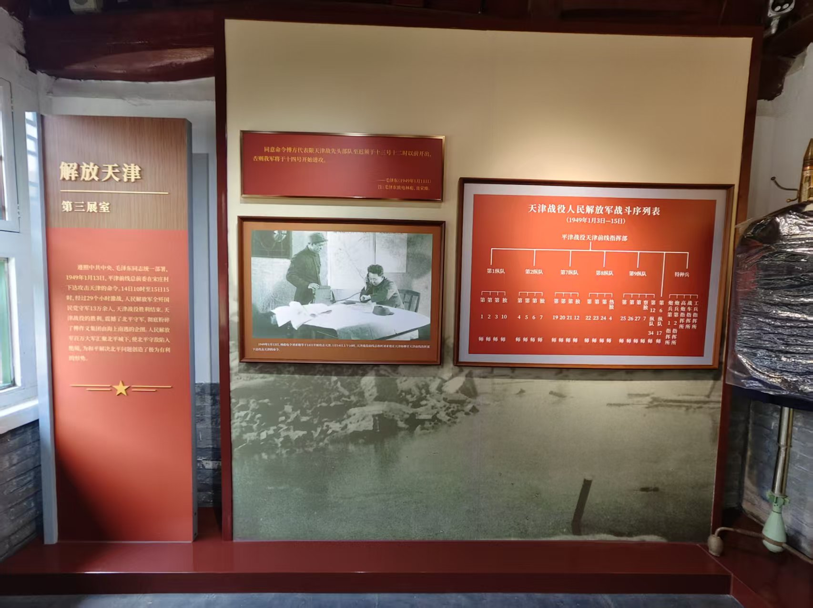
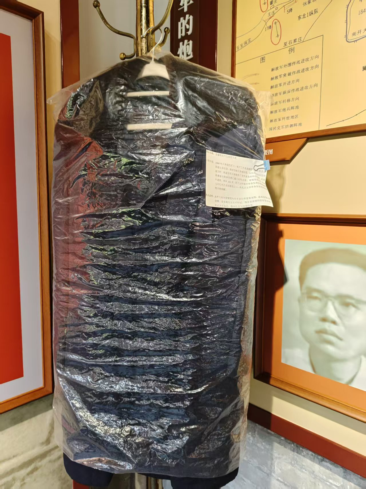
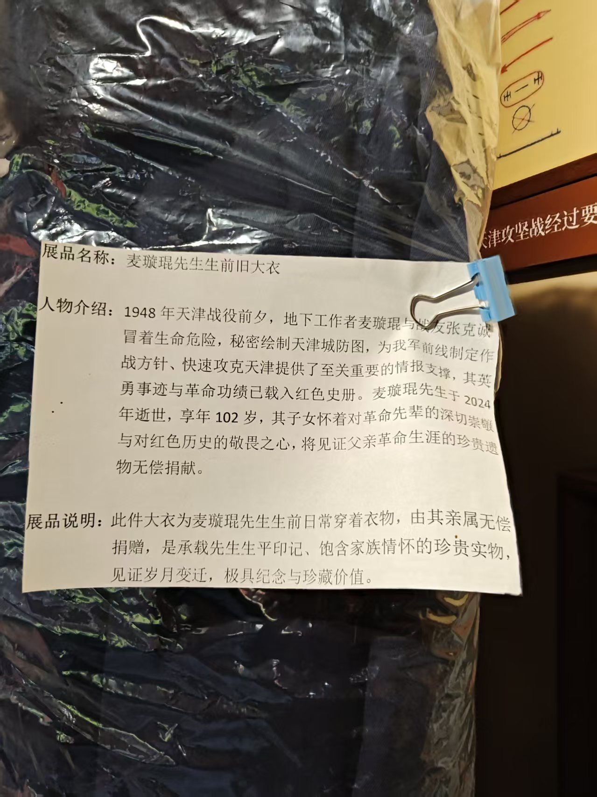
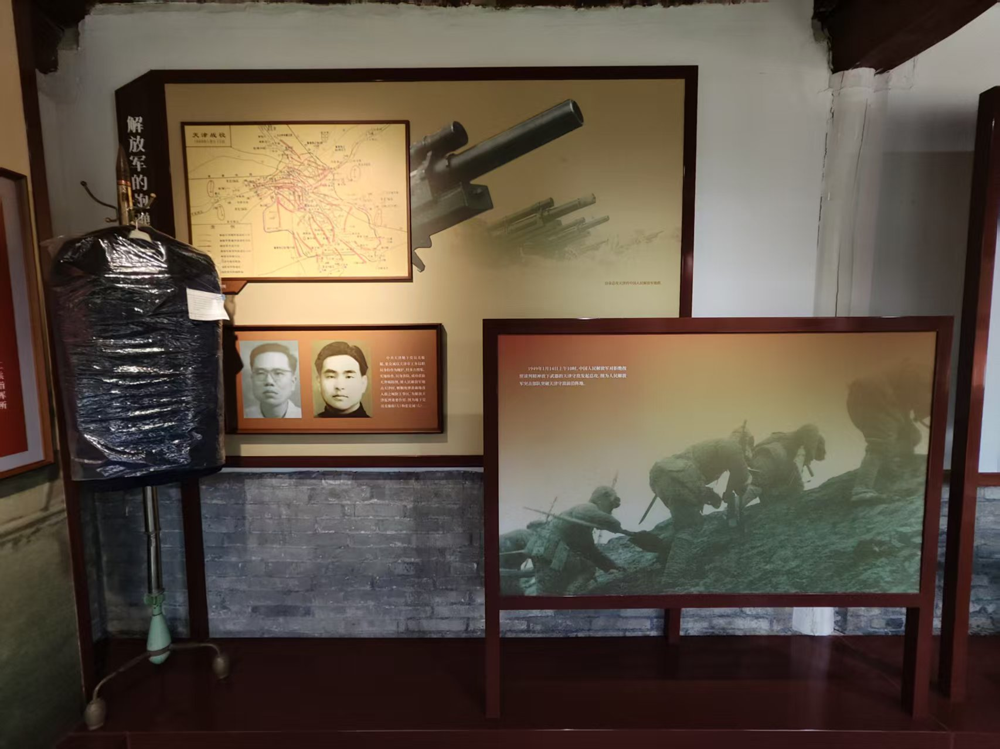
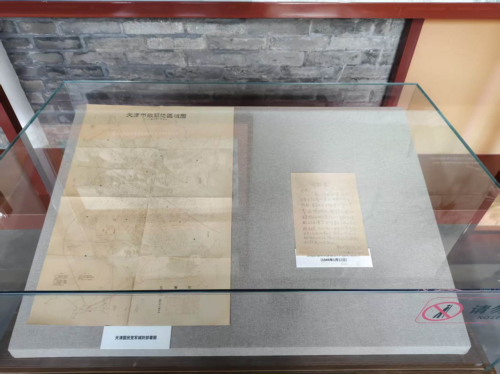
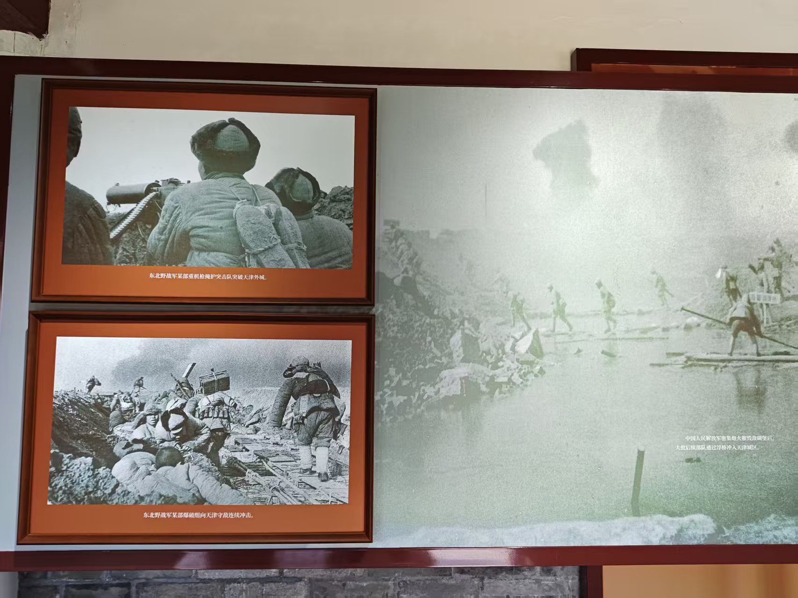
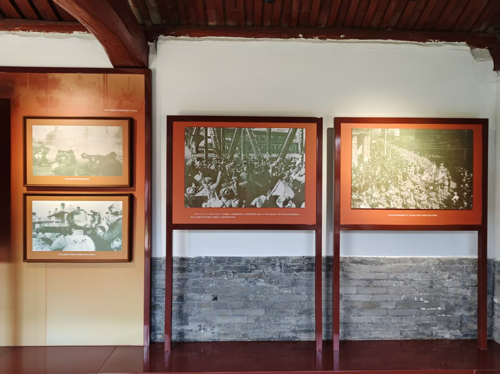
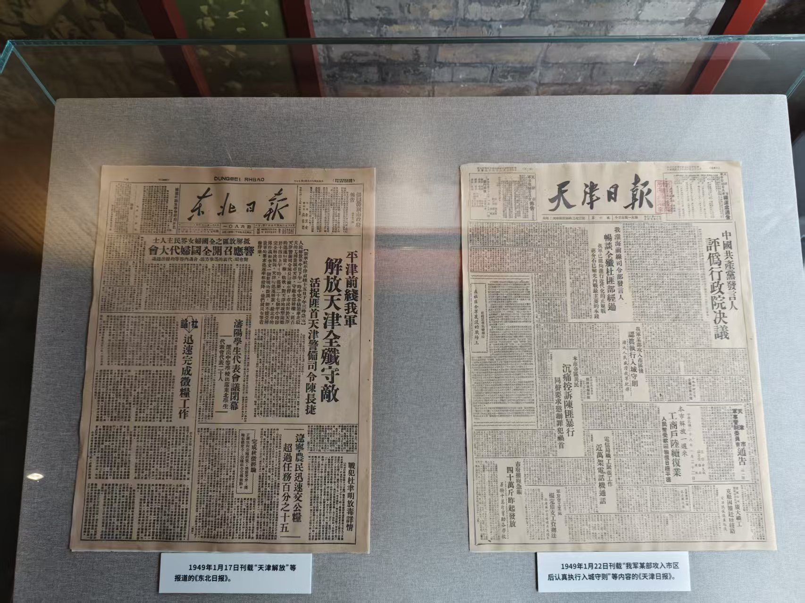
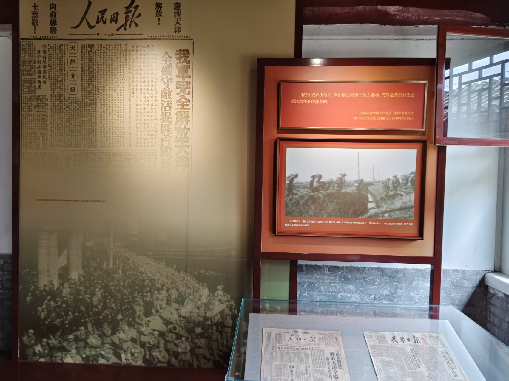

展区 3：解放天津
欢迎来到第三展区，解放天津。

此展区聚焦1949年1月13日至15日的天津战役，
通过作战命令、战斗序列表及历史照片，展现人民解放军29小时全歼守敌13万余人的辉煌胜利。

这件由地下工作者麦璇琨家属捐赠的旧大衣，
承载着其冒死绘制天津城防图的英勇事迹，是见证革命情报工作珍贵实物。

此大衣是承载先生生平印记、包含家族情怀的珍贵事物，
见证岁月变迁，极具纪念与珍藏价值。

展区结合天津战役地图与爆破组冲锋照片，
生动还原了东北野战军突破城墙、攻入市区的激烈战斗场景。

玻璃展柜中陈列的《天津市敌驻地区域图》与手写文件，真实记录了敌军防御布局，
为我军制定攻城策略提供了关键情报支持。

多幅黑白照片捕捉了东北野战军在炮火掩护下爆破城墙、涉水冲锋的英勇画面，
直观呈现了解放天津的艰苦卓绝。

三幅历史照片记录了1949年1月15日天津解放后市民夹道欢迎解放军入城的热烈场面，
彰显了人民对胜利的欢庆与拥护。

展柜中陈列的1949年1月17日《东北日报》与1月22日《天津日报》，
以“我军解放天津”“认真执行入城守则”等标题，见证了战役胜利与城市接管的历史时刻。

左侧大幅《人民日报》专版以“我军完全解放天津”为头条，
右侧展板引用毛泽东讲话并配以战士行军照片，凸显战役胜利的政治意义与军事成果